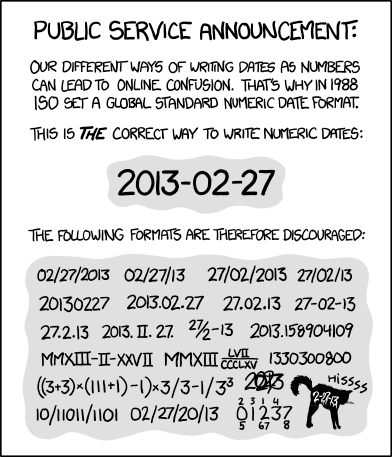

Organization of Data Science projects and some useful tools
Learning outcomes
- Understand the basic syntax and functionality of regular expressions (regex) for pattern matching.
- Explore the use of special characters, ranges, and anchors in regex to match specific patterns within text.
- Apply regex to search, extract, and manipulate data in various formats using practical examples.
- Use regular expressions to navigate and organize files within the filesystem.
Lecture 8 Activity 1
Let’s remember some concepts from last class
True or False 1. The command pwd prints the working directory as a relative path 2. The home directory can be the current working directory 3. In general, your home directory is the root directory
Project organization
Broadly speaking you will find two different ways of organizing a project: as a data analysis project and code project. Neither of this options is rigid enough to can give you here a exhaustive list of folder types and files you would expect on this projects. You will spend some time exploring different examples. However, we can work with a general structure:
project/
├── data/ *.csv
│ ├── processed/
│ └── raw/
├── reports/ *.ipynb *.Rmd
├── src/ *.py *.R
├── doc/ *.md
├── README.md
└── environment.yaml (or renv.lock)data If your original data file is stored as part of the repository and should never be overriden. That is why the original files are stored in a sub-folder called raw.
reports The documentation is the biggest difference between data analysis projects and software projects. Would you expect a report on a software project? In general notebooks and other literate programming documents (that prioritize narrative and storytelling) are the favourite options to share data analysis results [1]. We will learn more about reports literate programming documents in lecture 7. You will create your first data science project in DSCI 522. Software projects are mostly focused in the development of tools and in this cases other types of documentation (docstrings, vignettes, readtheDocs, JupyterBooks) are the favourite source of documentation for this kinf of projects. We will learn more about them in DSCI 524.
src and for R the src directory is often just called R/, whereas for Python is has the same name as the project (project). You will learn more about project hierarchy when making packages.
doc Documentation
README.md The README file is probably the first file a potential user/contributor will read when you
environment Speficying the computational environment will help you to ensure the reproducibility of yuour analysis. We will learn how to create this environments in lecture 6 and practice on lab 3.
Lecture 8 Activity 2
Which set of file(name)s do you want at 3 a.m. before a deadline?
A. Joe’s Filenames Use Spaces and Punctuation.xlsx B. figure 1.png C. JW7d^(2sl@deletethisandyourcareerisoverWx2*.txt D. 2014-06-08_abstract-for-sla.docx E. myabstract.docx
Filenames - best practices
Names matter

What works, what doesn’t?
NO
myabstract.docx
Joe’s Filenames Use Spaces and Punctuation.xlsx
figure 1.png
fig 2.png
JW7d^(2sl@deletethisandyourcareerisoverWx2*.txtYES
2014-06-08_abstract-for-sla.docx
joes-filenames-are-getting-better.xlsx
fig01_talk-scatterplot-length-vs-interest.png
fig02_talk-histogram-attendance.png
1986-01-28_raw-data-from-challenger-o-rings.txtThree principles for (file) names
Machine readable
Human readable
Plays well with default ordering
Awesome file names :)

Machine readable
Machine readable
- Regular expression and globbing friendly
- Avoid spaces, punctuation, accented characters, case sensitivity
- Easy to compute on
- Deliberate use of delimiters
Globbing
Excerpt of complete file listing:

Example of globbing to narrow file listing:

Same using Mac OS Finder search facilities

Same using regex in R

Punctuation
Deliberate use of "-" and "_" allows recovery of meta-data from the filenames:
"_"underscore used to delimit units of meta-data I want later"-"hyphen used to delimit words so my eyes don’t bleed


This happens to be R but also possible in the shell, Python, etc.
Recap: machine readable
Easy to search for files later
Easy to narrow file lists based on names
Easy to extract info from file names, e.g. by splitting
New to regular expressions and globbing? be kind to yourself and avoid
- Spaces in file names
- Punctuation
- Accented characters
- Different files named
fooandFoo
Human readable
Human readable
Name contains info on content
Connects to concept of a slug from semantic URLs
Example
Which set of file(name)s do you want at 3 a.m. before a deadline?

Embrace the slug
slug filenames 
slug 
Recap: Human readable
Easy to figure out what the heck something is, based on its name
Plays well with default ordering
Plays well with default ordering
Put something numeric first
Use the ISO 8601 standard for dates
Left pad other numbers with zeros
Examples
Chronological order:
Logical order: Put something numeric first

Dates
Use the ISO 8601 standard for dates: YYYY-MM-DD

Comprehensive map of all countries in the world that use the MM-DD-YYYY format
From https://twitter.com/donohoe/status/597876118688026624.
Left pad other numbers with zeros
If you don’t left pad, you get this:
10_final-figs-for-publication.R
1_data-cleaning.R
2_fit-model.Rwhich is just sad :(
Recap: Plays well with default ordering
Put something numeric first
Use the ISO 8601 standard for dates
Left pad other numbers with zeros
Recap
Three principles for (file) names
Machine readable
Human readable
Plays well with default ordering
Pros
Easy to implement NOW
Payoffs accumulate as your skills evolve and projects get more complex
Go forth and use awesome file names :)
Lecture Activities
- Which of the following items describe three important rules for naming files on a computer? Select all correct answers.
A. File name parts should be easy to extract programmatically B. Humans would understand something about file contents by looking at their names C. Files with appropriate names would be nicely organized by default D. File names should always use lower-case letters E. Underscores are the only allowed separator in file names F. Human understanding of file names should be prioritized over machine understanding
- Match each explanation with its corresponding file naming principle:
- By following this principle, we are able to use tools such as regular expressions and file-name globbing to search, select and manipulate files using tools such as the unix shell, R and Python.
H. By following this principle, we can have a good idea of what is inside files without having to open them (saves us time) and when we come back to work on a project we haven’t worked on in a while it is much easier for us to remember what we were working on and get started again.
I. By following this principle, we can make our files more organized and understandable, and files more findable. Ordered lists will be sorted into a logical order and so it is easy to orient yourself in the directory and find the files you want to find.
J. By following this principle, we will be sure that our files have the appropriate formatting in terms of their content. Such files will be ready for subsequent analysis in a data science pipeline.
- Which of the following are GOOD date formats to use in a filename?
K. 2020-01-26T0233 L. 20200126T0233 M. 2020-01-26
Asking effective questions
Why even bother?
Asking questions effectively means that the person helping you will be able to answer your question better and quicker. Being able to answer a question quicker means more time to help others, including your future self. When questions require clarification, fewer people will be helped overall. Sometimes this in unavoidable because the question is complex, but all too often it if because the person trying to help is not able to reproduce problem, or the question is unclear.
When you are asking for help online, e.g. on StackOverflow or on GitHub, remember that you are often receiving help from people who are volunteering their time. So please make it as easy as possible for them to help you.
You might be frustrated by a problem to the point where you just want to ask something like.
WHY IS THIS **** CODE NOT WORKING??????
Don’t do this. No one will help you. You will get more frustrated.
When I feel like this, I find it really helpful and calming to sit down and type out a proper question. You can start banging out words in the beginning, but as you slowly adhere to the format of asking properly, it will become like a meditative practice which also calms you down.
In addition to your mental wellbeing, writing down questions properly has another superb quality: they help you solve your own problems. The act of formulating a question in either speech or text helps you uncover what you missed while the problem was a mere thought. This is so common that it has a name: “Rubber duck debugging” allegedly from a software developer who put a rubber duck on their desk and whenever they had a problem they couldn’t solve, they starting talking to the toy duck, and often came upon the resolution during while describing the problem.
How to ask effectively
In essence, you want to make your question as easy to understand as possible and your specific problem as easy to reproduce as possible. If you just include a screenshot and title your question “Help”, the person helping you has to spend time trying to figure out what you actually want help with instead of helping, Instead include a succinct, clear description of your problem and the minimal code needed to reproduce it. If you are asking your question on stack overflow you can use tags to categorize it, and these can then be used to search for an answer via the syntax [tag-name]. This can be especially useful for R, since the name is just one letter and it can be hard to find relevant matches otherwise.
Minimal reproducible example
There is a Swedish expression: “beloved child has many names”. No, it does not translate very well to English, but the message is that someone or something that many people like, will be referred to differently by different people. This is true for minimal reproducible examples, which you might find referred to by any of the following:
- MRE Minimal Reproducible Example
- MCVE Minimal Complete Verifiable Example
- MWE Minimal Working Example
- reprex REPRoducible EXample
There have been great articles written on what goes into an MRE, and here are some of them that I recommend that you check out:
- https://stackoverflow.com/help/how-to-ask
- https://stackoverflow.com/help/minimal-reproducible-example
- https://community.rstudio.com/t/faq-whats-a-reproducible-example-reprex-and-how-do-i-do-one/5219
- https://reprex.tidyverse.org/ (an R package to help creating MREs from code)
In summary, asking effectively and creating an MRE includes the following tasks:
- Search for other questions similar to yours.
- Describe the issue clearly in the title and elaborate briefly in the text body.
- Reduce the code to the minimum required to recreate your error, and paste it as text.
- If your code includes functions or classes, include their definitions.
- Create small toy dataset instead of using real data.
- Use markdown code blocks for proper indentation and syntax highlighting.
- Describe what you have tried so far, what you don’t understand or what went wrong, including any error messages and their full traceback.
The points are elaborated on below:
- Search for other questions similar to yours. Many questions already have an answer, and finding it is faster both for you and for others. If the answer to an existing question is not good enough, improve it by adding the missing info!
- Write the tile as a summary of your issue. Think about what you would want the title to say if you were searching the issue list for help. Just “Error” or “Question” is not helpful, but “How to list content in a folder?” is.
- Introduce the problem by briefly describing what you want to do.
- Show what you have tried, explain what you expected to happen, and what went wrong. It is often critical that the person helping you can reproduce the problem, so include both the code or command you tried to run and the error message.
- For coding questions, text is preferred over a screenshot since it is easy to copy and paste, which facilitates reproducing your problem.
- Inline code should be surrounded by single backticks for clarity. Longer blocks of code with multiple lines should be surrounded by triple backticks.
- Include versions of any packages you are using, and the operating system if relevant, e.g. Win10, Python 3.8, pandas 1.0.2. On R you can use
devtools::session_info()to see this information (afterinstall.packages("devtools")). and on Python you can usesinfo()(after importing:from sinfo import sinfo, needs to be installed viapip install sinfo). - When your problem is solved, acknowledge the solution, close the issue/ticket/question. If you found the solution yourself, post it in a comment before closing, so that others can find it.
Lecture 8 Activity 3
What is wrong with the following
Introduction to Regular Expressions (REGEX)
Like with most things, the best way for you to learn Regex is to get practice using it. There are a few exercises included in the notebook, and at the end I have also included links interactive online exercises with are great to practice your regexes!
To see what a particular regex is matching and how, you can use one of these two webpages, which both do a great job visualizing and explaining the different parts of a regex match:
- https://regexr.com/
- regexr interprets text input as one big string by default, so you need to check “multiline” under “flags” (top right) for it to behave as expected with beginning and end of line matches (it hints at this in the output for both ^ and $).
- https://regex101.com/
- regex101 has the “multiline” flag set by default.
Basic matching
- Basic matching: if you look for a regular string, like
banana, regex will match the exact string (including its upper/lower case). - Both JupyterLab and VS Code have built in regex functionality (bring up the search box and click the
.*symbol to use regex rather than the default search). - When learning regex it is helpful to use one of the two webtools mentioned in the previous cell in order to visualize how your regex is matching the text.
- For this lecture, we will use a list of fruits to learn about regex.
applesas apple apricot banana bilberry blackberry blackcurrant blood orange blueberry canary melon cantaloupe cherry clementine cloudberry coconut cranberry cucumber currant dragonfruit durian elderberry gooseberry grape grapefruit papaya passionfruit peach orange oranges unripe persimmon pineapple pomegranate pomelo purple mangosteen rock melon salal berry satsuma star fruit strawberry watermelon
The square brackets: []
- If you want to specify the set of possible characters you can use square brackets
[]; - For example,
[Aa]pplewould matchAppleandapple.
Lecture 8 Exercise 1
Find all the pairs of vowels in the fruit list.
Highlight the black box below to see than correct answer (the black box will not show up on GitHub, so download the notebook unless you want the answer displayed) Remember to use one of the websites linked above to help you understand what your regex is matching (https://regexr.com/ or https://regex101.com/).
[aeiou][aeiou]
Ranges within []
You can also define ranges when using brackets. For example:
[A-Z]: will match any upper case letter[a-z]: will match any lower case letter[0-9]: will match any digit[0-5]: will match any digit between 0 and 5
The order cannot be reversed,
[z-A]does not work.You can combine ranges:
[A-Za-z].You can use square brackets starting with a caret. For example:
[^A-Z]: will match anything that is not an upper case letter[^0-9]: will match anything that is not a digit- Note that the caret needs to be inside the bracket, if it is outside it will match the beginning of a line as described under the “Anchors” section below.
For the curious, these ranges are ordered based on ASCI codes where every character is represented by a number. The first character in the list is
(space) and the last is~(tilde). The full list is shown below:!"#$%&'()*+,-./0123456789:;<=>?@ABCDEFGHIJKLMNOPQRSTUVWXYZ[\]^_`abcdefghijklmnopqrstuvwxyz{|}~
Special matching characters
- A common operation is to match any character (e.g. between two important characters).
- Instead of writing out the full range
[ -~](space to tilde), the special character.can be used to match any character in the list above.- Note that
.does not match the newline character, so if you have an expression that continues on the next line it will not be matched.
- Note that
- To match a literal
.(the period character), you can “escape” its special meaning by prefacing it with a backslash\.(most common) or surrounding it with square brackets[.]. - Another useful special character is
\w, which matches any character that normally occurs inside a word (so it does not match spaces, underlines, etc)
Lecture 8 Exercise 2
What is the difference between writing [A-Za-z] and [A-z]?
[A-z] will also match the characters [/]^_, as you can see in the list above.
Lecture 8 Exercise 3
Match any characters between two _.
_.*_
Anchors
- The caret outside the brackets means beginning of line. For example,
^applewill match all lines that start withapple, includingapple sauceandapples. - The dollar sign
$means end of line, e.g.,fruit$will match lines that end withfruit. - To remember this, you can use the mnemonic “Start with power (
^) and end with money ($)” (originally from Jenny Bryan). - Another useful anchor is
\b, which matches end of word.
Lecture 8 Exercise 4
Write a regex that will match a line that contains only pineapple. (Hint: you cannot just write pineapple - it will not work - why?)
^pineapple$
note that if you use just pineapple, lines that also contain other words would match too.
Repetitions
- To match multiple of the same character, you can either repeat it or use the following syntax:
{n}: exactlynoccurrences{n,}: at leastnoccurrences{0,m}: at mostmoccurrences{n,m}: betweennandm(inclusive) occurrences
Special repetition characters
- There are some shortcuts for the most common repetitions:
?: means 0 or 1 time ({0,1})*: means 0 or more time ({0,})+: means 1 or more time ({1,})
- For example,
apples?will matchappleandapples.- But
apples+will not matchappleorappplesq, but it will matchapples,appless,applesss, etc.
- But
Lecture 8 Exercise 5
Find the fruits with names between 10 and 12 characters.
.{10,12}
Lecture 8 Exercise 6
Find the lines with no more than 4 letters.
^.{0,4}$
Lecture 8 Exercise 7
Find all the words that contain at least two consecutive vowels.
[aeiou]{2,}
or
[aeiou][aeiou]+
Lecture 8 Exercise 8
This is a bit harder and derives from all previous sections: Match entire words that end in _.
\w*_\b
Additional exercises
- Go through the interactive tutorials and practice sessions at https://regexone.com/ that correspond to the topics we have covered during class.
- The Library Carpentry organization has many regex exercises in all sections of their regex course here https://librarycarpentry.org/lc-data-intro/ (you can just to do the exercises).
References
[1] Kery, M. B., Radensky, M., Arya, M., John, B. E., & Myers, B. A. (2018, April). The story in the notebook: Exploratory data science using a literate programming tool. In Proceedings of the 2018 CHI Conference on Human Factors in Computing Systems (pp. 1-11).